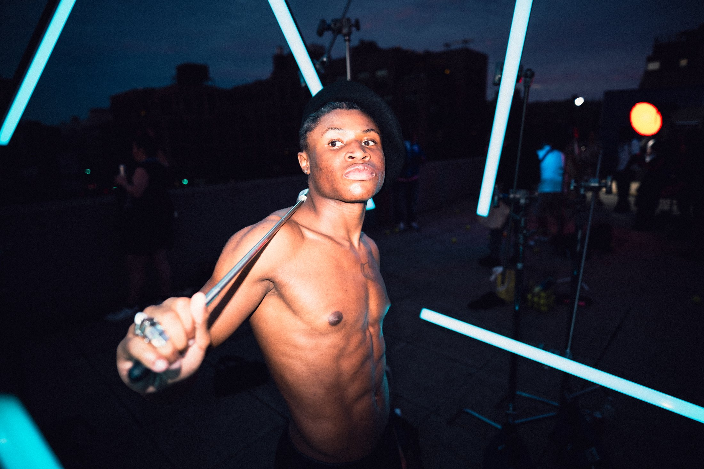
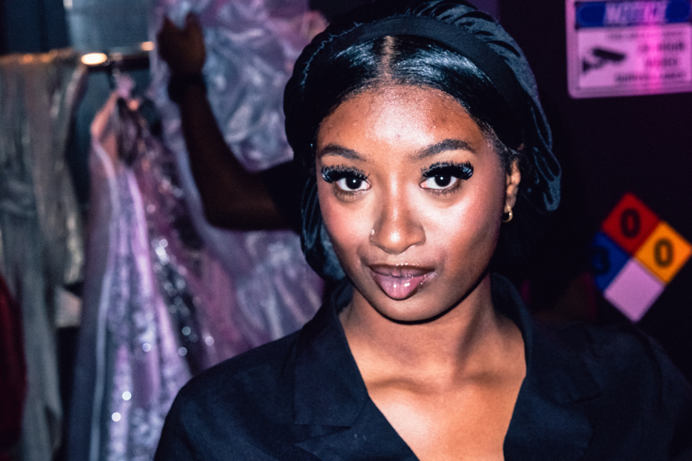
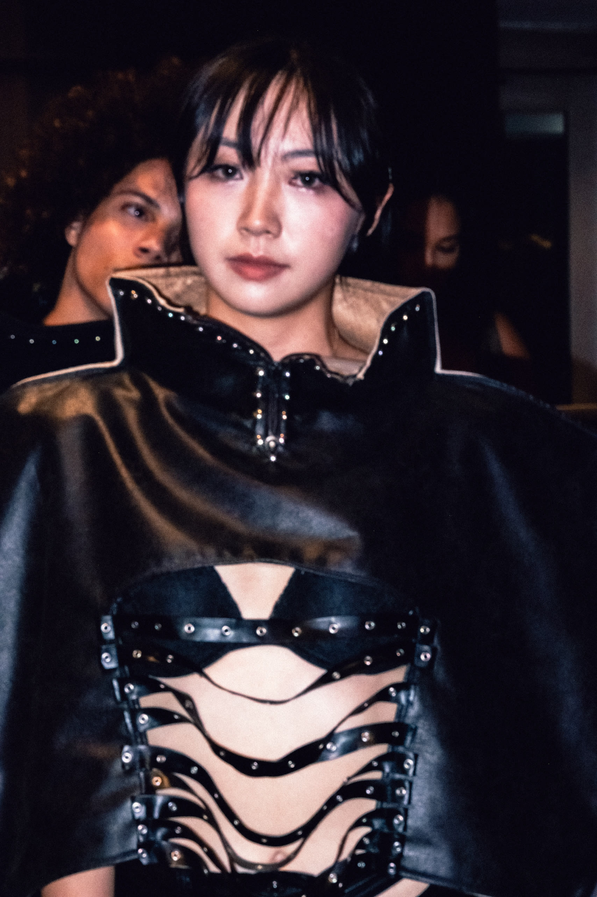

NEURAL STUDY / 00140° 43′ N / 73° 59′ W
THE BALD DUDE CO. PRESENTS
AFTER
IMAGE
INSTINCT / IDENTITY / MEMORY
Every face carries a private signal.
Some of them answer back.
PHOTOGRAPHY BY
JUSTIN VON BRAUN

SUBJECT 01THE WATCHER / 23:41
THE FACE IS A SIGNAL
A STUDY OF PRESENCE
The mind keeps
what the eye
cannot explain.
One second of eye contact. A shift in posture. Something in the frame that wasn't there a moment ago.
CORTEX / 07SIGNAL: ACTIVE
A MAP OF HUMAN
PRESENCE
PRESENCE
NOTICE WHAT CHANGES.KEEP WHAT REMAINS.
Decode what
Explore portraits ↗The room
remembers.
Explore events ↗
Show what
moves beneath.
Explore campaigns ↗CASE FILE / 002THE DOUBLE

STUDY 02 / IDENTITY IN MOTIONPORTRAIT / EDITORIAL
The face is
never alone.
Portraits with a pulse. Intimate, direct, and a little outside the frame.
VIEW THE PORTRAIT STUDY ↗NEW YORK CITYEDITORIAL / EVENTS / PEOPLE
 PHOTOGRAPHY / BY JUSTIN VON BRAUN
PHOTOGRAPHY / BY JUSTIN VON BRAUNAVAILABLE WORLDWIDEFEEL THE IMAGE.
FRAGMENTS / 03—05
What stays
with you.


YOUR IMAGE / NEXT
THE BALD DUDE CO. / NYC
Leave an
impression.
Editorial portraits, event coverage, and images with a point of view. New York City and beyond.
START A PROJECT ↗